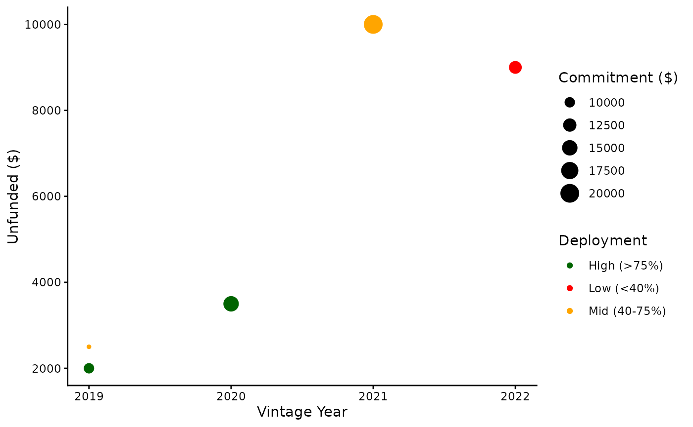

Introduction to pegap
intro-to-pegap.RmdMotivation
RStudio currently does not have extensive packages for PE Portfolio Analysis. This package aims to bridge a couple of those gaps.
Dataset
pegap contains a pre-built simple dataset to practice
with containing 5 fake funds’ information.
code_script
#> fund vintage_year commitment called recallable
#> 1 Fund A 2019 10000 9000 1000
#> 2 Fund B 2020 15000 12000 500
#> 3 Fund C 2019 8000 6000 500
#> 4 Fund D 2021 20000 10000 0
#> 5 Fund E 2022 12000 3000 0The dataset contains five variables: - fund — name of
the fund - vintage_year — year the fund began investing -
commitment — total capital committed in USD ($)
- `called` — capital called to date in USD ($) -
recallable — recallable distributions in USD ($)
Vintage Diversification Score
Quantifies the risk of weighting portfolios to heavily on one year using the Herfindahl-Hirschman Index (HHI). A score of 100 means perfect diversification across years.
vintage_diversification_score(
fund_names = code_script$fund,
vintage_years = code_script$vintage_year,
committed_capital = code_script$commitment
)
#> $vintage_weights
#> 2021 2019 2020 2022
#> 0.308 0.277 0.231 0.185
#>
#> $HHI
#> [1] 0.259
#>
#> $effective_vintages
#> [1] 3.9
#>
#> $diversification_score
#> [1] 98.8
#>
#> $flag
#> [1] "WARNING: High vintage concentration"**Note: when HHI>0.25, a warning message displays.
Unfunded Liability Schedule
Forecasts expected capital calls over a 5-year timeline using a
realistic preset deployment curve (Year1-Slow, Year3-Peak) It calculates
each fund’s current unfunded liability
(commitment - called + recallable) and distributes it
across five years
unfunded_liability_schedule(code_script)
#> fund current_unfunded Year1 Year2 Year3 Year4 Year5
#> 1 Fund A 2000 100 400 700 500 300
#> 2 Fund B 3500 175 700 1225 875 525
#> 3 Fund C 2500 125 500 875 625 375
#> 4 Fund D 10000 500 2000 3500 2500 1500
#> 5 Fund E 9000 450 1800 3150 2250 1350Portfolio Plot
Provides a visualisation of the portfolio as a scatterplot. Each point represents a fund, size shows total commitment and colour shows deployment progress. The x-axis shows vintage year, and the y-axis shows remaining unfunded commitment.
portfolio_plot(code_script)